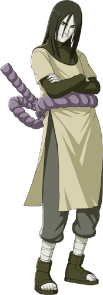

Informações sobre
Informações sobre
Orochimaru
Perfil
- Nome Completo: 大蛇丸 (Orochimaru)
- Idade: Imortal (idade indeterminada)
- Altura: ≅ 1,78m - 1,85m
- Peso: Desconhecido
Afiliações
- Ex-membro da Vila Oculta da Folha (Konohagakure)
- Fundador do Esquadrão Serpente (Hebi)
- Ex-membro da Akatsuki

Habilidades Especiais
Orochimaru é um mestre em Jutsu Proibido e experimentação genética. Ele é habilidoso em manipulação de serpentes, possui vasto conhecimento médico e é capaz de transferir sua consciência para diferentes corpos, concedendo-lhe uma forma de imortalidade.
Objetivos
Orochimaru é obcecado com a busca do conhecimento e da imortalidade. Ele está disposto a fazer qualquer coisa para alcançar seus objetivos, incluindo experimentos cruéis em humanos e traição contra sua própria aldeia. Seu desejo de poder e imortalidade o leva a perseguir constantemente novas técnicas e corpos mais fortes.